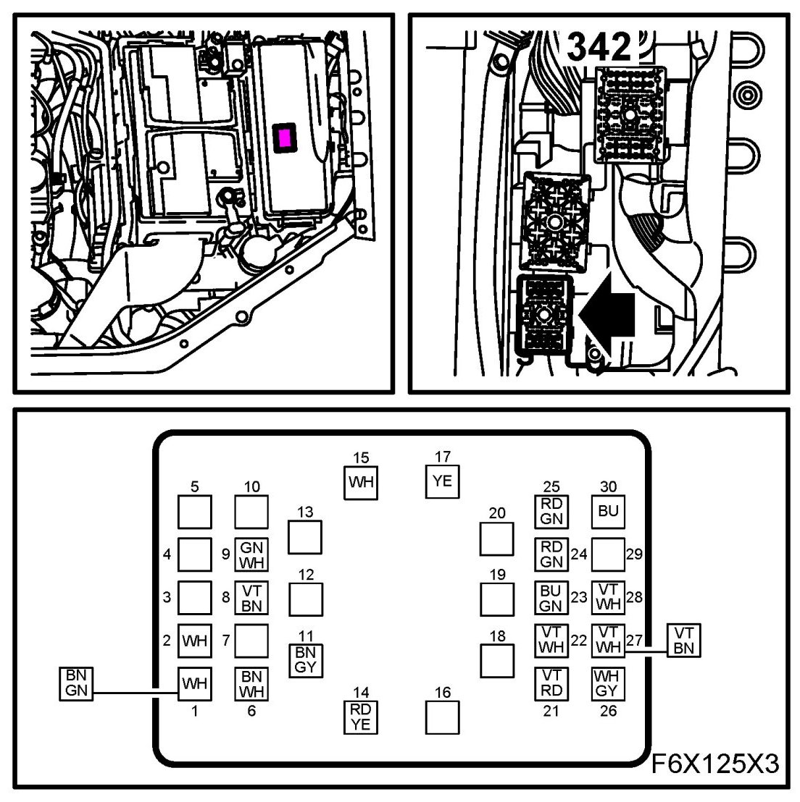
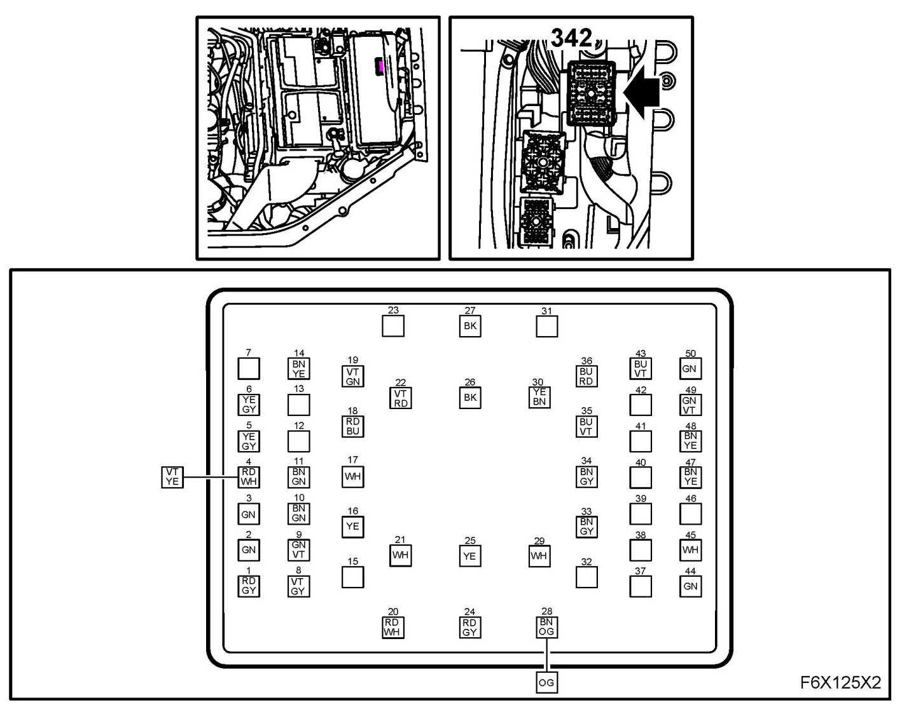
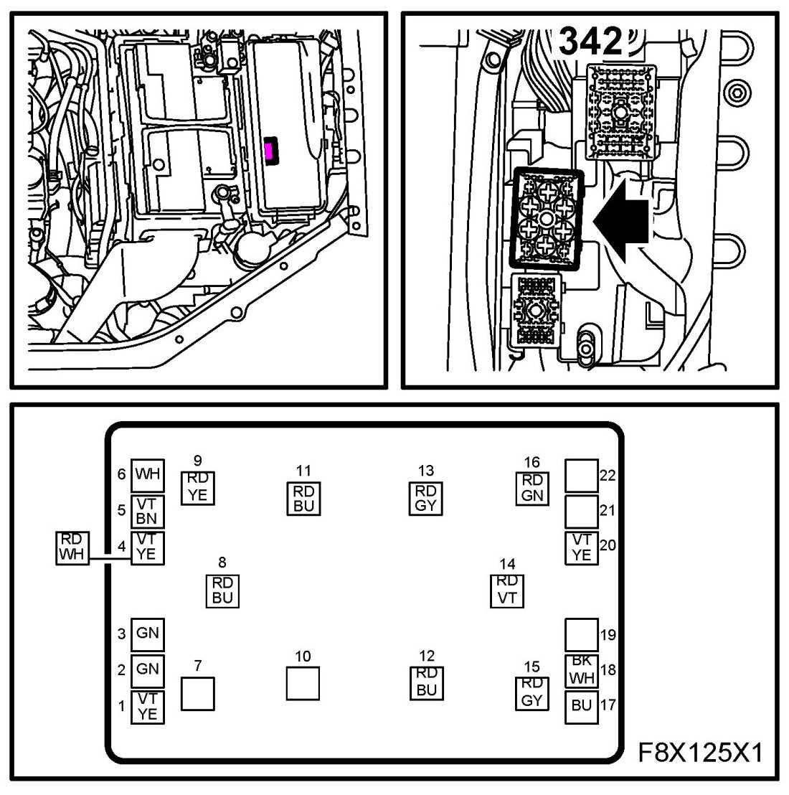
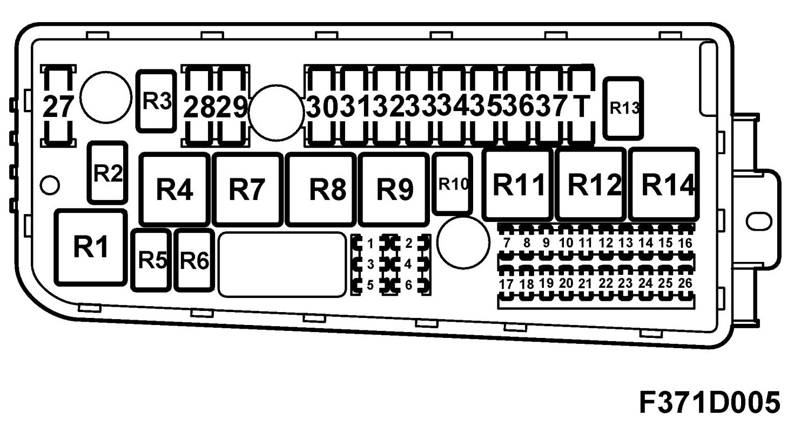
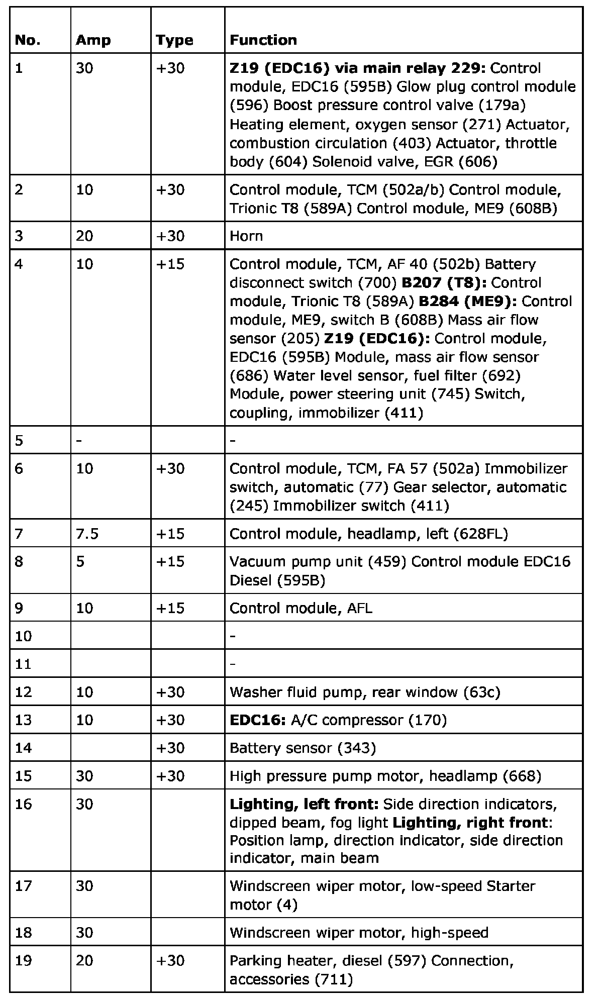
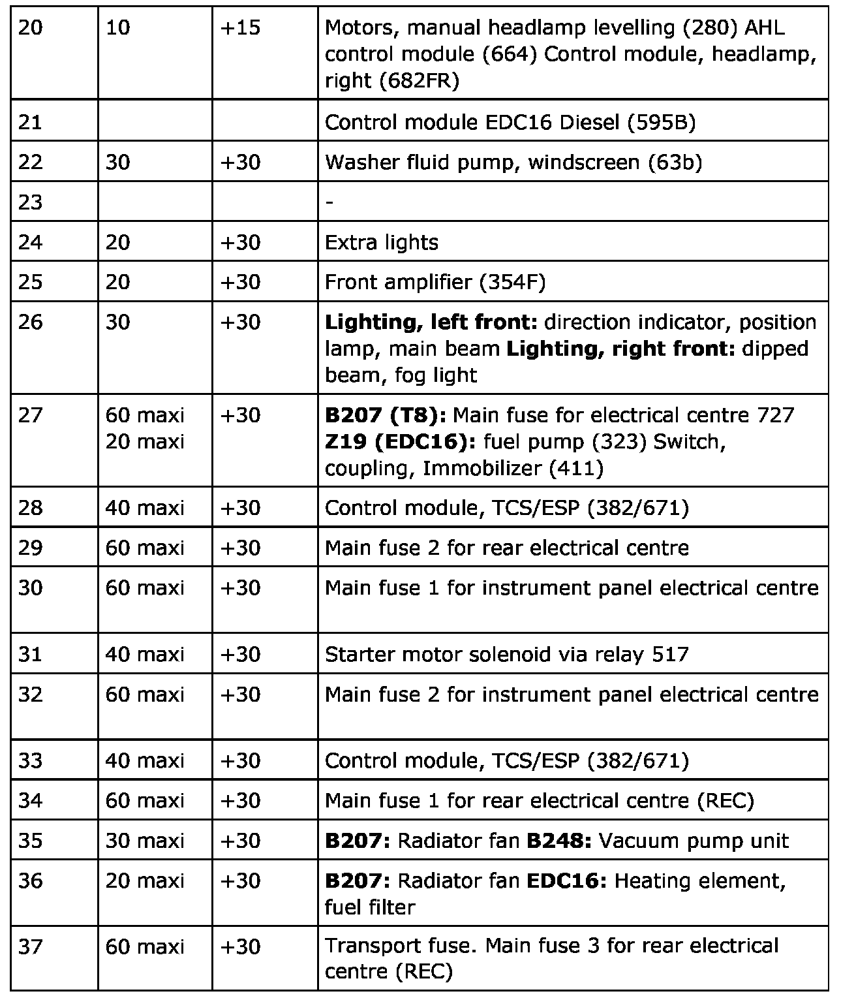
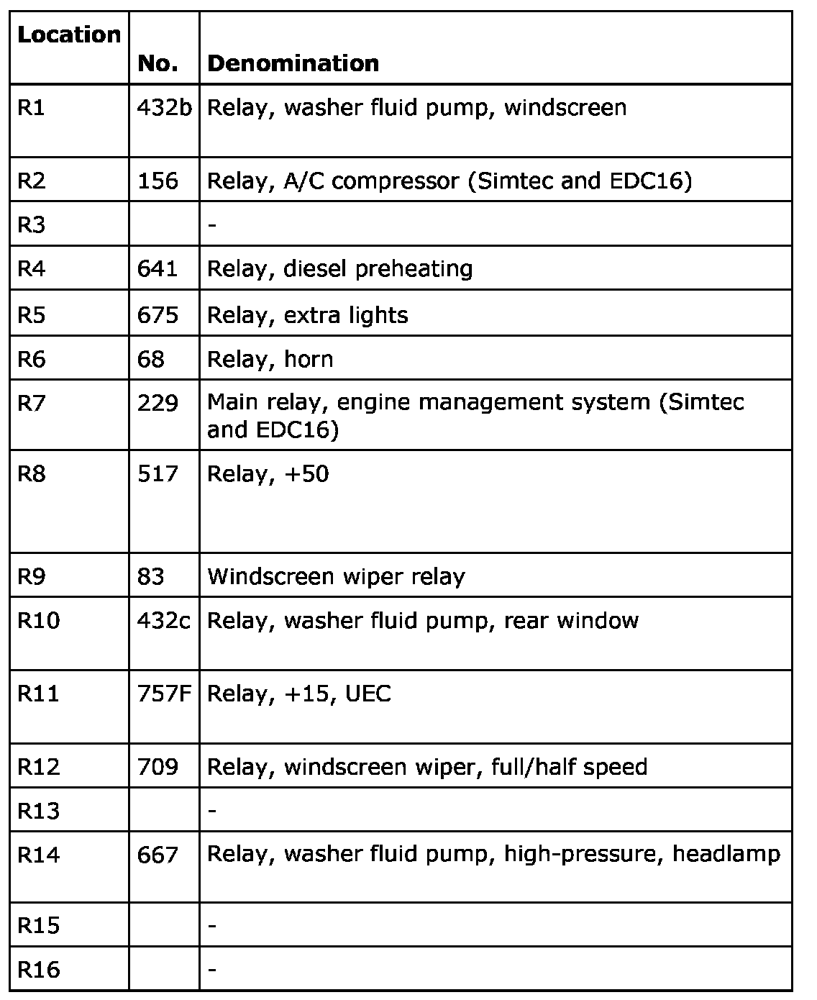

Fuse Block: Service and Repair
Underhood Electrical Centre (UEC) 342
Location
The electrical centre is located between the battery and the left-hand front wing.
Main use
It acts as electrical centre for the front section of the car and takes care of the logic for the front lighting as well as the visibility and signal systems.
It distributes current from the battery to other electrical centres.
The electrical centre contains the transport fuse (fuse 37).
Type
Electrical centre with relays, maxi and micro fuses as well as built-in control module for logic functions.
Connection
The fuse box is connected to the battery and to grounding points G30A, G31 and G33S. The electrical centre is connected via three switches in its base to the engine harness, front harness and main wiring harness.
Power supply circuit for +30
Power supply circuit for +15
The engine harness is connected via switch M

The front harness is connected via switch F

The main harness is connected via switch B

Fuses

The electrical centre can contain a greater number of fuses than those with a function listed below. In such cases, these are not connected to the car's wiring harnesses.


Relays
The electrical centre can contain a greater number of relays than those with a function listed below. In such cases, these are not connected to the car's wiring harnesses.
